library(tidyverse)
#> Warning: package 'tidyverse' was built under R version 4.2.3
#> Warning: package 'ggplot2' was built under R version 4.2.3
#> Warning: package 'tibble' was built under R version 4.2.3
#> Warning: package 'tidyr' was built under R version 4.2.3
#> Warning: package 'readr' was built under R version 4.2.3
#> Warning: package 'purrr' was built under R version 4.2.3
#> Warning: package 'dplyr' was built under R version 4.2.3
#> Warning: package 'stringr' was built under R version 4.2.2
#> Warning: package 'forcats' was built under R version 4.2.3
#> Warning: package 'lubridate' was built under R version 4.2.311 Exploratory data analysis
You are reading the work-in-progress second edition of R for Data Science. This chapter is largely complete and just needs final proof reading. You can find the complete first edition at https://r4ds.had.co.nz.
11.1 Introduction
本章将向您展示如何使用可视化和转换以系统的方式探索数据，统计学家将这项任务称为探索性数据分析（exploratory data analysis），简称 EDA。 EDA 是一个迭代循环。 你：
提出有关您的数据的问题。
通过可视化、转换和建模数据来搜索答案。
使用您学到的知识来完善您的问题和/或产生新问题。
EDA 不是一个具有严格规则的正式流程。 最重要的是，EDA 是一种心态。 在 EDA 的初始阶段，您应该随意调查您想到的每个想法。 其中一些想法会成功，而另一些则会是死胡同。 随着探索的继续，您将获得一些特别富有成效的见解，最终将其写下来并与其他人交流。
EDA 是任何数据分析的重要组成部分，即使主要的研究问题已经摆在您面前，因为您始终需要调查数据的质量。 数据清理只是 EDA 的一种应用：您询问数据是否符合您的期望。 要进行数据清理，您需要部署 EDA 的所有工具：可视化、转换和建模。
11.1.1 Prerequisites
在本章中，我们将结合您所学到的有关 dplyr 和 ggplot2 的知识来交互式地提出问题，用数据回答它们，然后提出新问题。
11.2 Questions
“There are no routine statistical questions, only questionable statistical routines.” — Sir David Cox
“Far better an approximate answer to the right question, which is often vague, than an exact answer to the wrong question, which can always be made precise.” — John Tukey
您在 EDA 期间的目标是加深对数据的理解。 最简单的方法是使用问题作为指导调查的工具。 当您提出问题时，该问题会将您的注意力集中在数据集的特定部分上，并帮助您决定要进行哪些图形、模型或转换。
EDA 从根本上来说是一个创造性的过程。 与大多数创意过程一样，提出高质量问题的关键是产生大量问题。 在分析开始时很难提出有启发性的问题，因为您不知道可以从数据集中收集哪些见解。 另一方面，您提出的每个新问题都会让您接触到数据的新方面，并增加您做出发现的机会。 如果您根据发现的内容提出一个新问题来跟进每个问题，则可以快速深入了解数据中最有趣的部分，并提出一组发人深省的问题。
对于应该提出哪些问题来指导您的研究，没有任何规定。 然而，有两种类型的问题对于在数据中进行发现总是有用的。 您可以将这些问题大致表述为：
我的变量中发生什么类型的变化？
我的变量之间发生什么类型的共同变化？
本章的其余部分将讨论这两个问题。 我们将解释什么是变化（variation）和共同变化（covariation），并向您展示回答每个问题的几种方法。
11.3 Variation
Variation 是变量值在不同测量中发生变化的趋势。 在现实生活中你可以很容易地看到 variation；如果您两次测量任何连续变量，您将得到两个不同的结果。 即使您测量的是恒定量情况也是如此，例如光速。 您的每次测量都会包含少量误差，该误差因测量而异。 如果您在不同的对象（例如，不同人的眼睛颜色）或在不同的时间（例如，不同时刻的电子能级）进行测量，变量也会有所不同。 每个变量都有自己的变化模式，这可以揭示有关同一观察的测量之间以及不同观察之间的变化的有趣信息。 理解该模式的最佳方法是可视化变量值的分布，您已在 ?sec-data-visualization 中了解了这一点。
我们将通过可视化 diamonds 数据集中 ~54,000 颗钻石的重量（carat）分布来开始我们的探索。 由于 carat 是一个数值变量，我们可以使用直方图（histogram）：
ggplot(diamonds, aes(x = carat)) +
geom_histogram(binwidth = 0.5)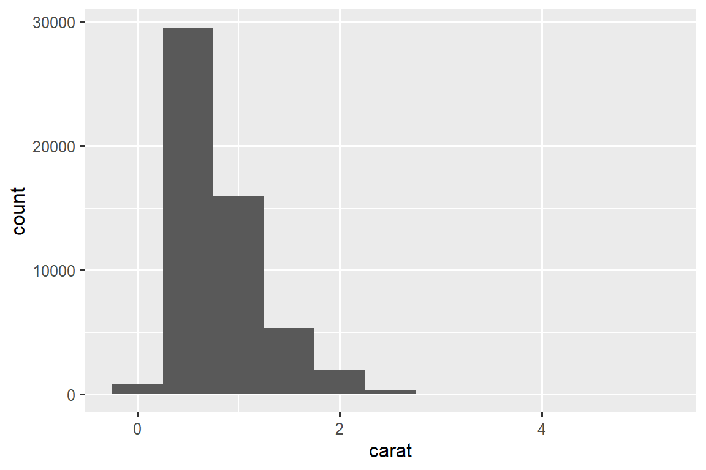
现在您可以可视化 variation，您应该在图中寻找什么？ 您应该提出什么类型的后续问题？ 我们在下面列出了您将在图表中找到的最有用的信息类型，以及针对每种信息类型的一些后续问题。 提出好的后续问题的关键是依靠你的好奇心（你想了解更多什么？）以及你的怀疑精神（这怎么可能误导？）。
11.3.1 Typical values
在条形图和直方图中，高条形显示变量的常见值，较短的条形显示不太常见的值。 没有条形的位置显示数据中未看到的值。 要将这些信息转化为有用的问题，请寻找任何意想不到的东西：
哪些值最常见？ 为什么？
哪些值是稀有的？ 为什么？ 这符合您的期望吗？
你能看到任何不寻常的模式吗？ 什么可以解释它们？
让我们看一下较小钻石的 carat 分布。
smaller <- diamonds |>
filter(carat < 3)
ggplot(smaller, aes(x = carat)) +
geom_histogram(binwidth = 0.01)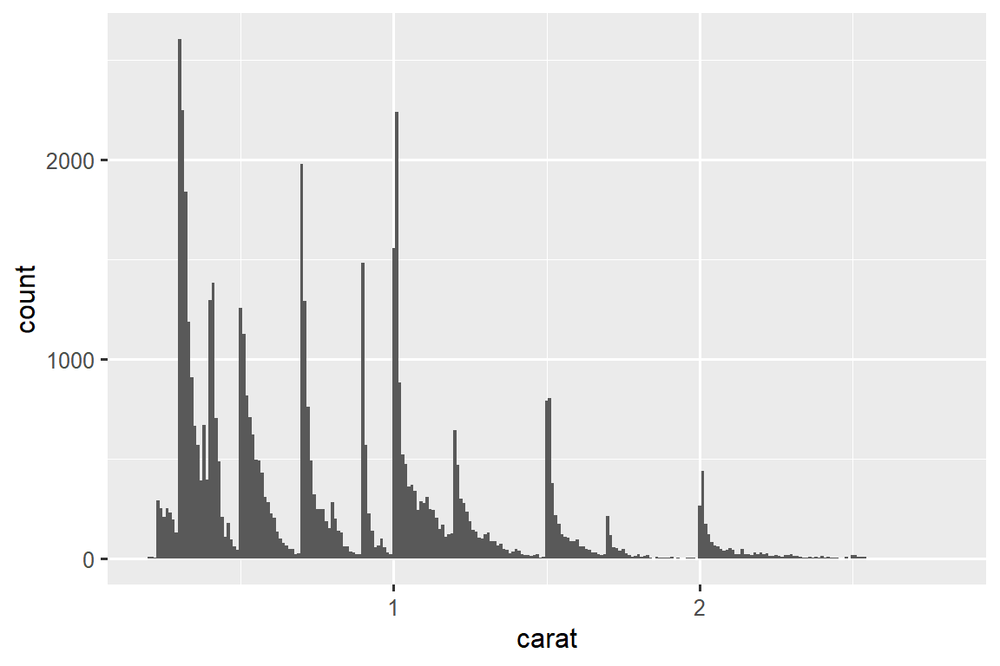
该直方图提出了几个有趣的问题：
为什么整克拉和常见分数克拉的钻石更多？
为什么每个峰稍右侧的菱形数量多于每个峰左侧的菱形数量？
可视化还可以揭示 clusters，这表明数据中存在 subgroups。 要了解 subgroups，请询问：
每个 subgroup 内的观察结果有何相似之处？
不同 clusters 中的观察结果有何不同？
您如何解释或描述这些 clusters？
为什么 clusters 的出现可能会产生误导？
其中一些问题可以通过数据来回答，而另一些则需要有关数据的领域专业知识。 其中许多会提示您探索变量之间的关系，例如，看看一个变量的值是否可以解释另一个变量的行为。 我们很快就会谈到这一点。
11.3.2 Unusual values
异常值（Outliers）是指不寻常的观察结果；数据点似乎不符合模式。 有时异常值是数据输入错误，有时它们只是在此数据收集中碰巧观察到的极端值，有时它们表明了重要的新发现。 当您有大量数据时，有时很难在直方图中看到异常值。 例如，从 diamonds 数据集中获取 y 变量的分布。 异常值的唯一证据是 x-axis 上异常宽的限制。
ggplot(diamonds, aes(x = y)) +
geom_histogram(binwidth = 0.5)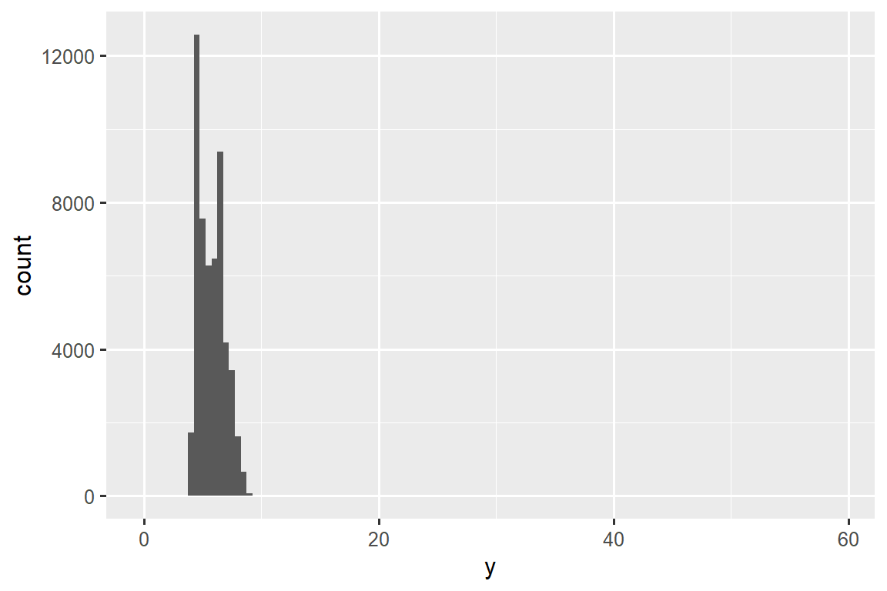
常见的 bin 中有太多的观察结果，而稀有的 bin 则非常短，因此很难看到它们（尽管如果你专心地盯着 0，也许你会发现一些东西）。 为了更容易看到不寻常的值，我们需要使用 coord_cartesian() 缩放到 y-axis 的小值：
ggplot(diamonds, aes(x = y)) +
geom_histogram(binwidth = 0.5) +
coord_cartesian(ylim = c(0, 50))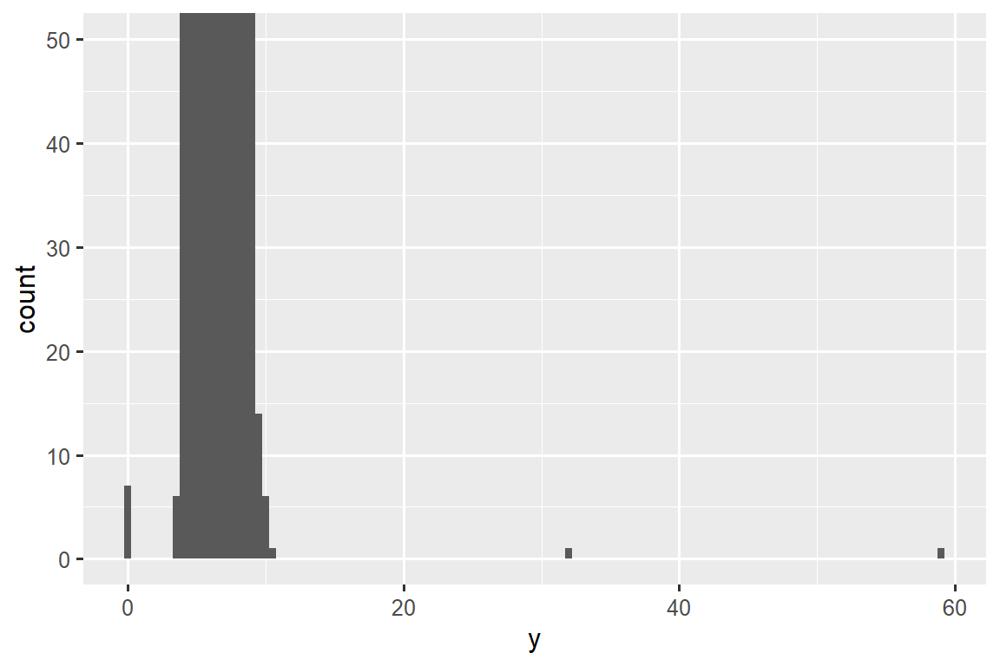
coord_cartesian() 还有一个 xlim() 参数，用于当您需要放大 x 轴时。 ggplot2 还具有 xlim() 和 ylim() 函数，它们的工作方式略有不同：它们丢弃超出限制的数据。
这让我们可以看到存在三个不寻常的值：0, ~30, and ~60。 我们用 dplyr 将它们取出：
unusual <- diamonds |>
filter(y < 3 | y > 20) |>
select(price, x, y, z) |>
arrange(y)
unusual
#> # A tibble: 9 × 4
#> price x y z
#> <int> <dbl> <dbl> <dbl>
#> 1 5139 0 0 0
#> 2 6381 0 0 0
#> 3 12800 0 0 0
#> 4 15686 0 0 0
#> 5 18034 0 0 0
#> 6 2130 0 0 0
#> 7 2130 0 0 0
#> 8 2075 5.15 31.8 5.12
#> 9 12210 8.09 58.9 8.06y 变量测量这些钻石的三个尺寸之一，以 mm 为单位。 我们知道钻石的宽度不可能是 0mm，所以这些值一定是不正确的。 通过 EDA，我们发现了编码为 0 的缺失数据，这是我们通过简单搜索 NAs 永远无法找到的。 展望未来，我们可能会选择将这些值重新编码为 NAs，以防止误导计算。 我们可能还会怀疑 32mm 和 59mm 的测量结果令人难以置信：这些钻石超过一英寸长，但价格却不用花费数十万美元！
在有或没有异常值的情况下重复分析是一个很好的做法。 如果它们对结果的影响很小，并且您无法弄清楚它们为什么在那里，那么忽略它们并继续前进是合理的。 然而，如果它们对你的结果有重大影响，你不应该无缘无故地放弃它们。 您需要找出导致它们的原因（例如数据输入错误），并披露您在文章中删除了它们。
11.3.3 Exercises
探索钻石中每个
x、y和z变量的分布。 你学到了什么？ 想象一下钻石，以及如何确定长度、宽度和深度的尺寸。探索
price分布。 您是否发现任何不寻常或令人惊讶的事情？ （提示：仔细考虑binwidth并确保尝试广泛的值。）0.99 克拉有多少颗钻石？ 1 克拉是多少？ 您认为造成这种差异的原因是什么？
放大直方图时，比较和对比
coord_cartesian()与xlim()或ylim()。 如果未设置binwidth会发生什么？ 如果您尝试缩放，只显示半条，会发生什么情况？
11.4 Unusual values
如果您在数据集中遇到了异常值，并且只想继续进行其余的分析，您有两种选择。
-
删除具有奇怪值的整行：
我们不推荐此选项，因为一个无效值并不意味着该观察的所有其他值也无效。 此外，如果您的数据质量较低，当您将此方法应用于每个变量时，您可能会发现您没有任何数据了！
-
相反，我们建议用缺失值替换异常值。 最简单的方法是使用
mutate()用修改后的副本替换变量。 您可以使用if_else()函数将异常值替换为NA：
应该在哪里绘制缺失值并不明显，因此 ggplot2 不会将它们包含在图中，但它确实警告它们已被删除：
ggplot(diamonds2, aes(x = x, y = y)) +
geom_point()
#> Warning: Removed 9 rows containing missing values (`geom_point()`).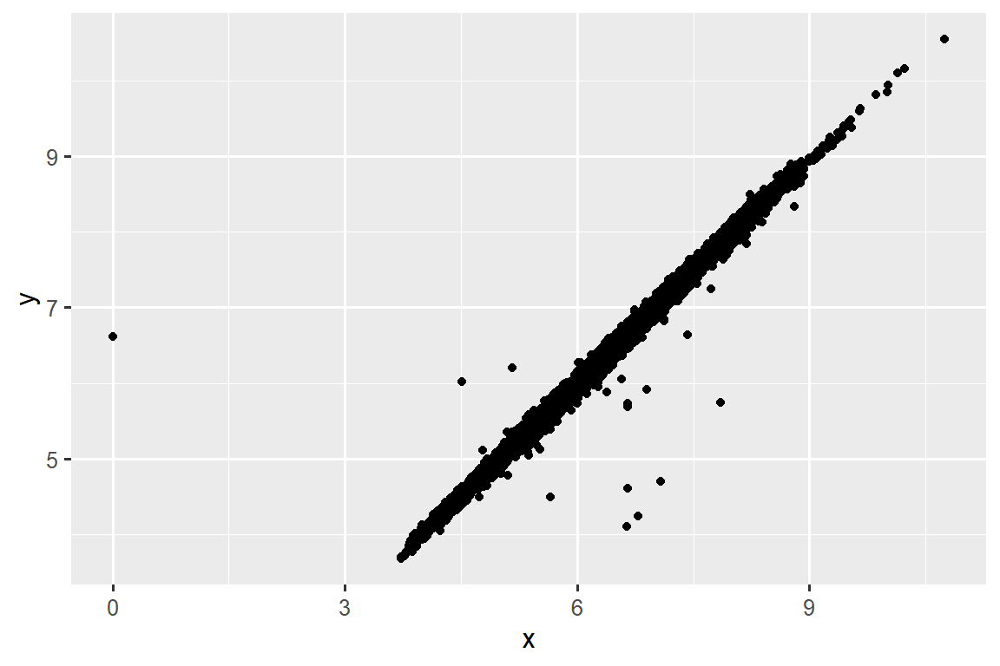
要抑制该警告，请设置 na.rm = TRUE：
ggplot(diamonds2, aes(x = x, y = y)) +
geom_point(na.rm = TRUE)其他时候，您想要了解是什么使具有缺失值的观测值与具有记录值的观测值不同。 例如，在 nycflights13::flights1 中，dep_time 变量中缺失值表示航班已取消。 因此，您可能需要比较已取消和未取消的预定出发时间。 您可以通过创建一个新变量，使用 is.na() 检查 dep_time 是否丢失来做到这一点。
nycflights13::flights |>
mutate(
cancelled = is.na(dep_time),
sched_hour = sched_dep_time %/% 100,
sched_min = sched_dep_time %% 100,
sched_dep_time = sched_hour + (sched_min / 60)
) |>
ggplot(aes(x = sched_dep_time)) +
geom_freqpoly(aes(color = cancelled), binwidth = 1/4)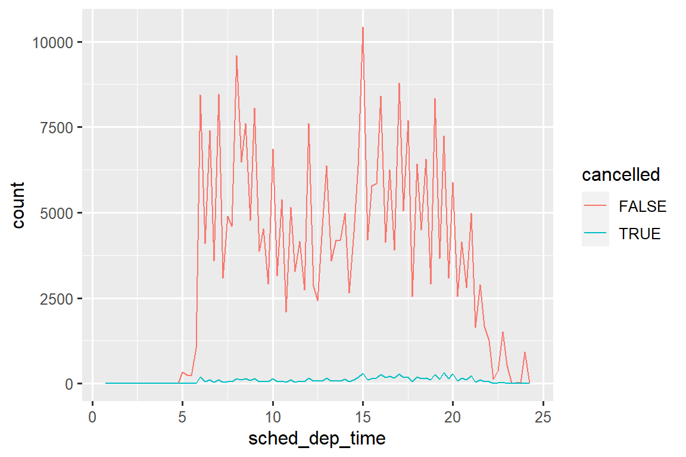
然而，这个图并不好，因为未取消的航班比取消的航班多得多。 在下一节中，我们将探讨一些改进这种比较的技术。
11.4.1 Exercises
11.5 Covariation
If variation describes the behavior within a variable, covariation describes the behavior between variables. Covariation is the tendency for the values of two or more variables to vary together in a related way. The best way to spot covariation is to visualize the relationship between two or more variables.
11.5.1 A categorical and a numerical variable
For example, let’s explore how the price of a diamond varies with its quality (measured by cut) using geom_freqpoly():
ggplot(diamonds, aes(x = price)) +
geom_freqpoly(aes(color = cut), binwidth = 500, linewidth = 0.75)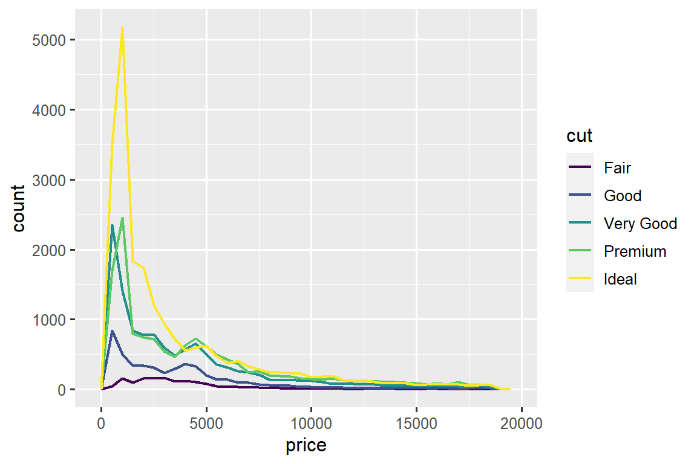
Note that ggplot2 uses an ordered color scale for cut because it’s defined as an ordered factor variable in the data. You’ll learn more about these in Section 17.6.
The default appearance of geom_freqpoly() is not that useful here because the height, determined by the overall count, differs so much across cuts, making it hard to see the differences in the shapes of their distributions.
To make the comparison easier we need to swap what is displayed on the y-axis. Instead of displaying count, we’ll display the density, which is the count standardized so that the area under each frequency polygon is one.
ggplot(diamonds, aes(x = price, y = after_stat(density))) +
geom_freqpoly(aes(color = cut), binwidth = 500, linewidth = 0.75)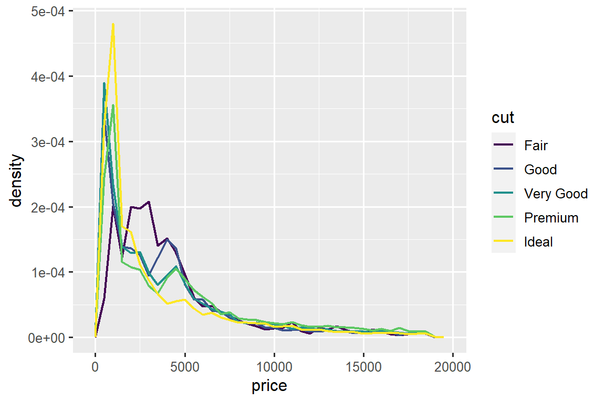
Note that we’re mapping the density the y, but since density is not a variable in the diamonds dataset, we need to first calculate it. We use the after_stat() function to do so.
There’s something rather surprising about this plot - it appears that fair diamonds (the lowest quality) have the highest average price! But maybe that’s because frequency polygons are a little hard to interpret - there’s a lot going on in this plot.
A visually simpler plot for exploring this relationship is using side-by-side boxplots.
ggplot(diamonds, aes(x = cut, y = price)) +
geom_boxplot()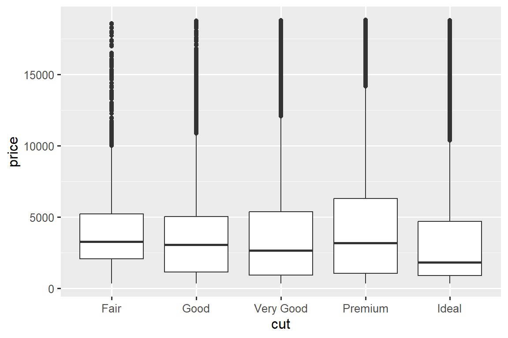
We see much less information about the distribution, but the boxplots are much more compact so we can more easily compare them (and fit more on one plot). It supports the counter-intuitive finding that better quality diamonds are typically cheaper! In the exercises, you’ll be challenged to figure out why.
cut is an ordered factor: fair is worse than good, which is worse than very good and so on. Many categorical variables don’t have such an intrinsic order, so you might want to reorder them to make a more informative display. One way to do that is with fct_reorder(). You’ll learn more about that function in Section 17.4, but we want to give you a quick preview here because it’s so useful. For example, take the class variable in the mpg dataset. You might be interested to know how highway mileage varies across classes:
ggplot(mpg, aes(x = class, y = hwy)) +
geom_boxplot()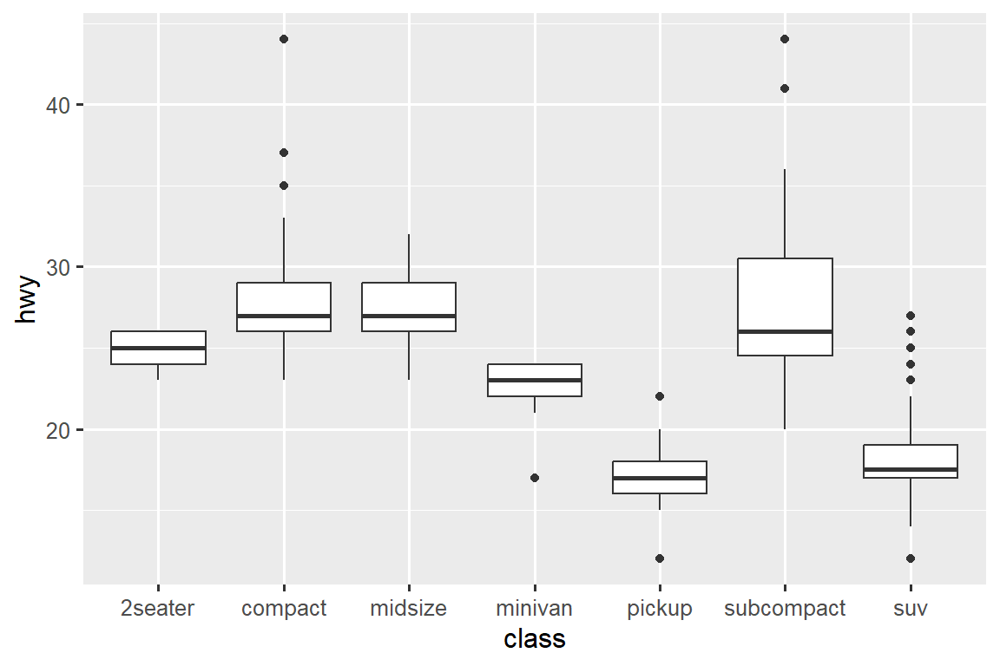
To make the trend easier to see, we can reorder class based on the median value of hwy:
ggplot(mpg, aes(x = fct_reorder(class, hwy, median), y = hwy)) +
geom_boxplot()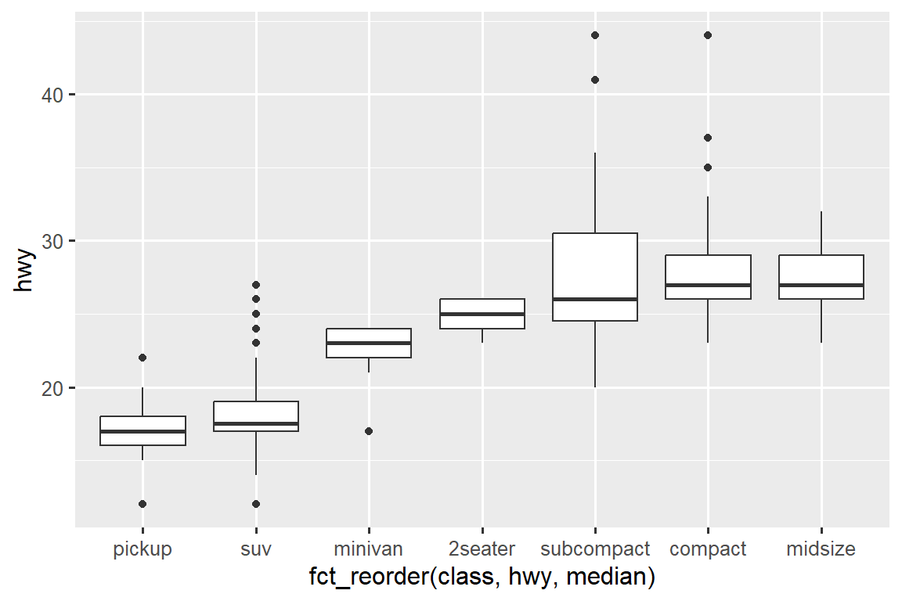
If you have long variable names, geom_boxplot() will work better if you flip it 90°. You can do that by exchanging the x and y aesthetic mappings.
ggplot(mpg, aes(x = hwy, y = fct_reorder(class, hwy, median))) +
geom_boxplot()
11.5.1.1 Exercises
Use what you’ve learned to improve the visualization of the departure times of cancelled vs. non-cancelled flights.
Based on EDA, what variable in the diamonds dataset appears to be most important for predicting the price of a diamond? How is that variable correlated with cut? Why does the combination of those two relationships lead to lower quality diamonds being more expensive?
Instead of exchanging the x and y variables, add
coord_flip()as a new layer to the vertical boxplot to create a horizontal one. How does this compare to exchanging the variables?One problem with boxplots is that they were developed in an era of much smaller datasets and tend to display a prohibitively large number of “outlying values”. One approach to remedy this problem is the letter value plot. Install the lvplot package, and try using
geom_lv()to display the distribution of price vs. cut. What do you learn? How do you interpret the plots?Create a visualization of diamond prices vs. a categorical variable from the
diamondsdataset usinggeom_violin(), then a facetedgeom_histogram(), then a coloredgeom_freqpoly(), and then a coloredgeom_density(). Compare and contrast the four plots. What are the pros and cons of each method of visualizing the distribution of a numerical variable based on the levels of a categorical variable?If you have a small dataset, it’s sometimes useful to use
geom_jitter()to avoid overplotting to more easily see the relationship between a continuous and categorical variable. The ggbeeswarm package provides a number of methods similar togeom_jitter(). List them and briefly describe what each one does.
11.5.2 Two categorical variables
To visualize the covariation between categorical variables, you’ll need to count the number of observations for each combination of levels of these categorical variables. One way to do that is to rely on the built-in geom_count():
ggplot(diamonds, aes(x = cut, y = color)) +
geom_count()
The size of each circle in the plot displays how many observations occurred at each combination of values. Covariation will appear as a strong correlation between specific x values and specific y values.
Another approach for exploring the relationship between these variables is computing the counts with dplyr:
diamonds |>
count(color, cut)
#> # A tibble: 35 × 3
#> color cut n
#> <ord> <ord> <int>
#> 1 D Fair 163
#> 2 D Good 662
#> 3 D Very Good 1513
#> 4 D Premium 1603
#> 5 D Ideal 2834
#> 6 E Fair 224
#> # ℹ 29 more rowsThen visualize with geom_tile() and the fill aesthetic:
If the categorical variables are unordered, you might want to use the seriation package to simultaneously reorder the rows and columns in order to more clearly reveal interesting patterns. For larger plots, you might want to try the heatmaply package, which creates interactive plots.
11.5.2.1 Exercises
How could you rescale the count dataset above to more clearly show the distribution of cut within color, or color within cut?
What different data insights do you get with a segmented bar chart if color is mapped to the
xaesthetic andcutis mapped to thefillaesthetic? Calculate the counts that fall into each of the segments.Use
geom_tile()together with dplyr to explore how average flight departure delays vary by destination and month of year. What makes the plot difficult to read? How could you improve it?
11.5.3 Two numerical variables
You’ve already seen one great way to visualize the covariation between two numerical variables: draw a scatterplot with geom_point(). You can see covariation as a pattern in the points. For example, you can see a positive relationship between the carat size and price of a diamond: diamonds with more carats have a higher price. The relationship is exponential.
ggplot(smaller, aes(x = carat, y = price)) +
geom_point()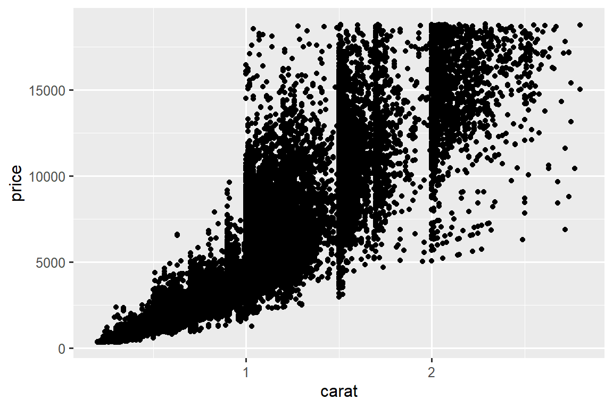
(In this section we’ll use the smaller dataset to stay focused on the bulk of the diamonds that are smaller than 3 carats)
Scatterplots become less useful as the size of your dataset grows, because points begin to overplot, and pile up into areas of uniform black, making it hard to judge differences in the density of the data across the 2-dimensional space as well as making it hard to spot the trend. You’ve already seen one way to fix the problem: using the alpha aesthetic to add transparency.
ggplot(smaller, aes(x = carat, y = price)) +
geom_point(alpha = 1 / 100)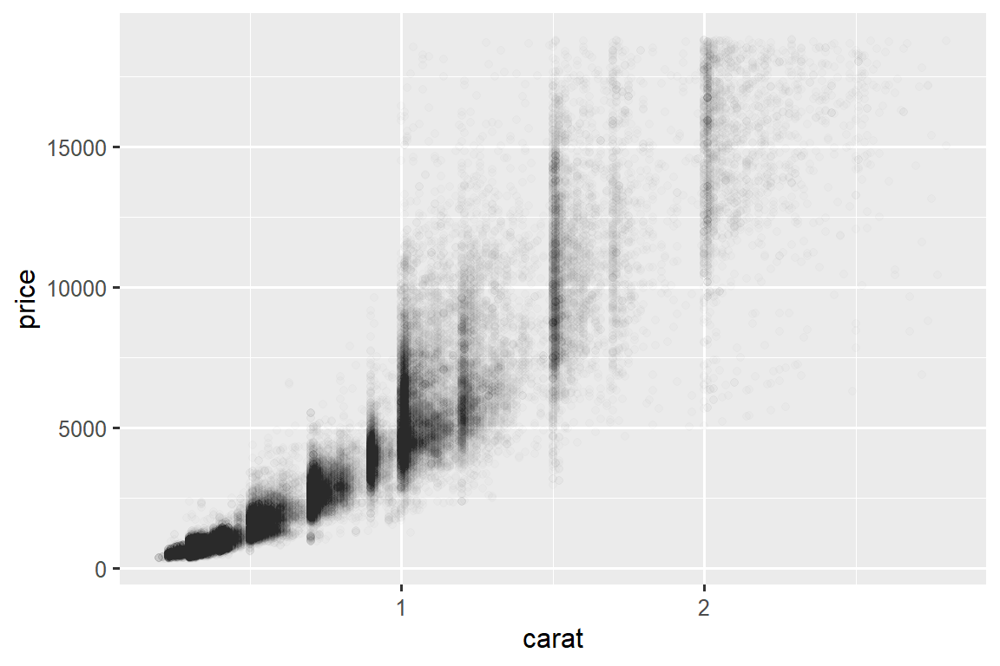
But using transparency can be challenging for very large datasets. Another solution is to use bin. Previously you used geom_histogram() and geom_freqpoly() to bin in one dimension. Now you’ll learn how to use geom_bin2d() and geom_hex() to bin in two dimensions.
geom_bin2d() and geom_hex() divide the coordinate plane into 2d bins and then use a fill color to display how many points fall into each bin. geom_bin2d() creates rectangular bins. geom_hex() creates hexagonal bins. You will need to install the hexbin package to use geom_hex().
ggplot(smaller, aes(x = carat, y = price)) +
geom_bin2d()
# install.packages("hexbin")
ggplot(smaller, aes(x = carat, y = price)) +
geom_hex()
#> Warning: Computation failed in `stat_binhex()`
#> Caused by error in `compute_group()`:
#> ! The package "hexbin" is required for `stat_binhex()`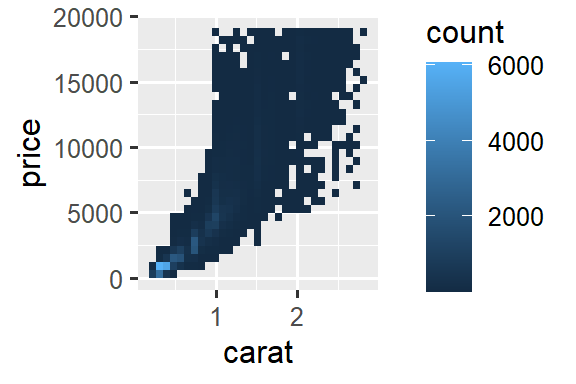
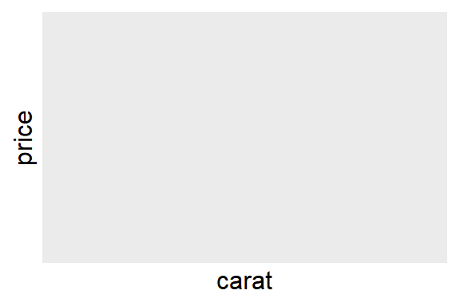
Another option is to bin one continuous variable so it acts like a categorical variable. Then you can use one of the techniques for visualizing the combination of a categorical and a continuous variable that you learned about. For example, you could bin carat and then for each group, display a boxplot:
ggplot(smaller, aes(x = carat, y = price)) +
geom_boxplot(aes(group = cut_width(carat, 0.1)))![Side-by-side box plots of price by carat. Each box plot represents diamonds that are 0.1 carats apart in weight. The box plots show that as carat increases the median price increases as well. Additionally, diamonds with 1.5 carats or lower have right skewed price distributions, 1.5 to 2 have roughly symmetric price distributions, and diamonds that weigh more have left skewed distributions. Cheaper, smaller diamonds have outliers on the higher end, more expensive, bigger diamonds have outliers on the lower end.](EDA_files/figure-html/unnamed-chunk-27-1.png)
cut_width(x, width), as used above, divides x into bins of width width. By default, boxplots look roughly the same (apart from number of outliers) regardless of how many observations there are, so it’s difficult to tell that each boxplot summaries a different number of points. One way to show that is to make the width of the boxplot proportional to the number of points with varwidth = TRUE.
11.5.3.1 Exercises
Instead of summarizing the conditional distribution with a boxplot, you could use a frequency polygon. What do you need to consider when using
cut_width()vs.cut_number()? How does that impact a visualization of the 2d distribution ofcaratandprice?Visualize the distribution of
carat, partitioned byprice.How does the price distribution of very large diamonds compare to small diamonds? Is it as you expect, or does it surprise you?
Combine two of the techniques you’ve learned to visualize the combined distribution of cut, carat, and price.
-
Two dimensional plots reveal outliers that are not visible in one dimensional plots. For example, some points in the following plot have an unusual combination of
xandyvalues, which makes the points outliers even though theirxandyvalues appear normal when examined separately. Why is a scatterplot a better display than a binned plot for this case?diamonds |> filter(x >= 4) |> ggplot(aes(x = x, y = y)) + geom_point() + coord_cartesian(xlim = c(4, 11), ylim = c(4, 11)) -
Instead of creating boxes of equal width with
cut_width(), we could create boxes that contain roughly equal number of points withcut_number(). What are the advantages and disadvantages of this approach?ggplot(smaller, aes(x = carat, y = price)) + geom_boxplot(aes(group = cut_number(carat, 20)))
11.6 Patterns and models
If a systematic relationship exists between two variables it will appear as a pattern in the data. If you spot a pattern, ask yourself:
Could this pattern be due to coincidence (i.e. random chance)?
How can you describe the relationship implied by the pattern?
How strong is the relationship implied by the pattern?
What other variables might affect the relationship?
Does the relationship change if you look at individual subgroups of the data?
Patterns in your data provide clues about relationships, i.e., they reveal covariation. If you think of variation as a phenomenon that creates uncertainty, covariation is a phenomenon that reduces it. If two variables covary, you can use the values of one variable to make better predictions about the values of the second. If the covariation is due to a causal relationship (a special case), then you can use the value of one variable to control the value of the second.
Models are a tool for extracting patterns out of data. For example, consider the diamonds data. It’s hard to understand the relationship between cut and price, because cut and carat, and carat and price are tightly related. It’s possible to use a model to remove the very strong relationship between price and carat so we can explore the subtleties that remain. The following code fits a model that predicts price from carat and then computes the residuals (the difference between the predicted value and the actual value). The residuals give us a view of the price of the diamond, once the effect of carat has been removed. Note that instead of using the raw values of price and carat, we log transform them first, and fit a model to the log-transformed values. Then, we exponentiate the residuals to put them back in the scale of raw prices.
library(tidymodels)
#> Warning: package 'tidymodels' was built under R version 4.2.3
#> Warning: package 'broom' was built under R version 4.2.3
#> Warning: package 'dials' was built under R version 4.2.3
#> Warning: package 'scales' was built under R version 4.2.1
#> Warning: package 'infer' was built under R version 4.2.3
#> Warning: package 'modeldata' was built under R version 4.2.3
#> Warning: package 'parsnip' was built under R version 4.2.3
#> Warning: package 'recipes' was built under R version 4.2.3
#> Warning: package 'rsample' was built under R version 4.2.2
#> Warning: package 'tune' was built under R version 4.2.3
#> Warning: package 'workflows' was built under R version 4.2.3
#> Warning: package 'workflowsets' was built under R version 4.2.3
#> Warning: package 'yardstick' was built under R version 4.2.3
diamonds <- diamonds |>
mutate(
log_price = log(price),
log_carat = log(carat)
)
diamonds_fit <- linear_reg() |>
fit(log_price ~ log_carat, data = diamonds)
diamonds_aug <- augment(diamonds_fit, new_data = diamonds) |>
mutate(.resid = exp(.resid))
ggplot(diamonds_aug, aes(x = carat, y = .resid)) +
geom_point()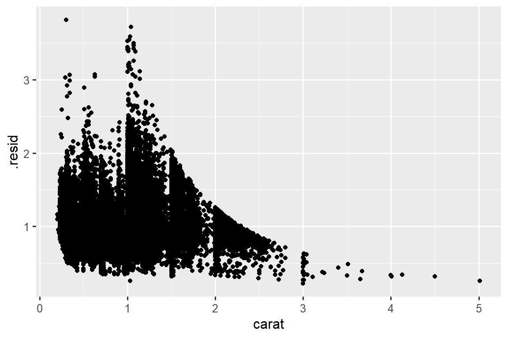
Once you’ve removed the strong relationship between carat and price, you can see what you expect in the relationship between cut and price: relative to their size, better quality diamonds are more expensive.
ggplot(diamonds_aug, aes(x = cut, y = .resid)) +
geom_boxplot()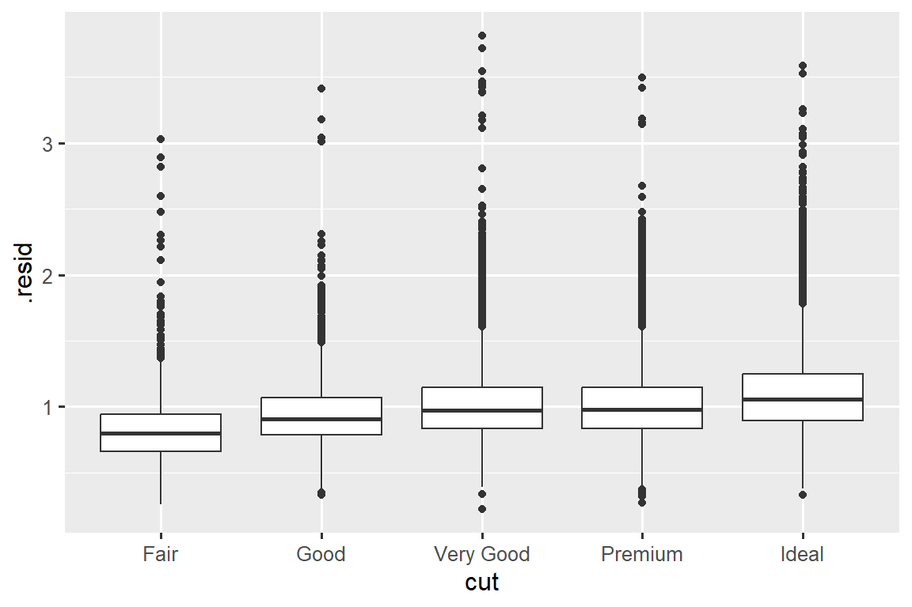
We’re not discussing modelling in this book because understanding what models are and how they work is easiest once you have tools of data wrangling and programming in hand.
11.7 Summary
In this chapter you’ve learned a variety of tools to help you understand the variation within your data. You’ve seen techniques that work with a single variable at a time and with a pair of variables. This might seem painfully restrictive if you have tens or hundreds of variables in your data, but they’re foundation upon which all other techniques are built.
In the next chapter, we’ll focus on the tools we can use to communicate our results.
请记住，当我们需要明确函数（或数据集）来自何处时，我们将使用特殊形式
package::function()或package::dataset。↩︎